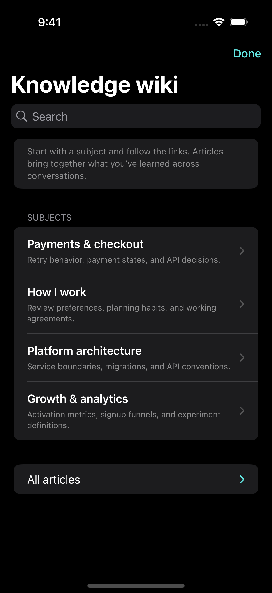

Share your agent sessions and context across devices.
Start a Claude Code or Codex session on your Mac, follow it from your phone, finish it on your laptop. It is the same live session on every device, running on your Mac with your files, tools and logins. A local wiki carries what you have worked on into every new session.

Set up your Mac
Install Agent Remote on the Mac that does the work, and sign in to Claude Code or Codex from its window. Your agents run there, with your files, tools and logins.
Use your phone and other laptops to share sessions
Pair an iPhone or another computer by scanning a QR code. Start sessions, follow replies as they stream, send files and answer prompts from any of them. The same live session is on every device, and in Terminal on the Mac with pickup.
Your agents remember your work, so context is never lost
As you work, Agent Remote builds a wiki about you and your projects and keeps it up to date. Every new Claude or Codex session starts from it, so you stop re-explaining your work.
Read and correct it on your phone or Mac. It stays on your Mac and is maintained with your own Claude or Codex account.

iPhone / laptop ⇄ relay (forwards ciphertext) ⇄ your Mac
└ Claude Code, Codex, the wiki,
your files and tools
Also included
- Hit a usage limit and the chat waits, then carries on by itself when your Claude or Codex limit resets.
- Your context use and 5-hour and weekly limits at a glance, with reset times.
- Queue follow-up messages while an agent works, or stop it mid-turn.
- Push notifications when an agent replies or needs an answer.
- Questions, permission prompts and folder-trust prompts as tap-to-answer cards.
- Sessions you started in Terminal show up too, and Claude sign-in can be renewed from your phone before it expires.
- Choose the model and effort for each chat, and pair several Macs to one phone.
- Agents can use your signed-in Chrome or Safari tabs and take screenshots, once you allow it in macOS.
- Photos, files and screenshots in both directions, and voice dictation.
- Your Mac stays awake while an agent is working, and the desktop apps update themselves.
Security and privacy
- Your agents run on your Mac, with full access to it. Anyone you pair can direct them, so pair only your own devices. You can revoke a device at any time.
- End-to-end encrypted. Devices agree on keys with X25519 and encrypt every request, reply and file with AES-256-GCM. The relay sees routing IDs, IP addresses, timing and sizes, never content.
- No accounts, analytics or tracking. Model traffic goes from your Mac directly to Anthropic or OpenAI under your own sign-in.
- Run your own relay if you prefer: it is a small Node service in the repo. Instructions · Privacy policy
Requirements
- Mac: macOS 13.5 or later, Apple silicon or Intel, kept awake and online.
- An agent: Claude Code or Codex. Agent Remote can install and sign in for you.
- iPhone: iOS 17 or later. Desktop client: macOS 14 or later.
Open source
Agent Remote is MIT licensed. Read the code, report a bug, or send a pull request.
★ Star on GitHub